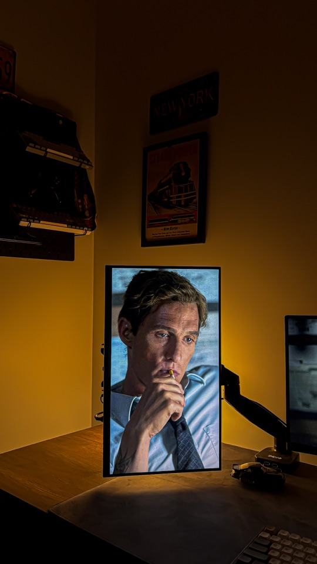
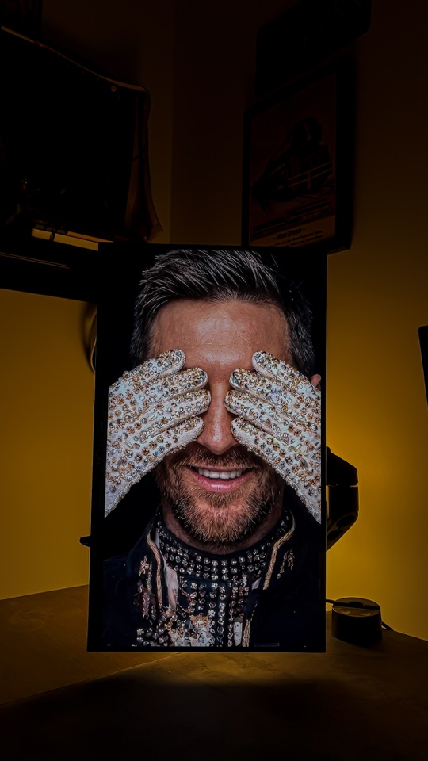
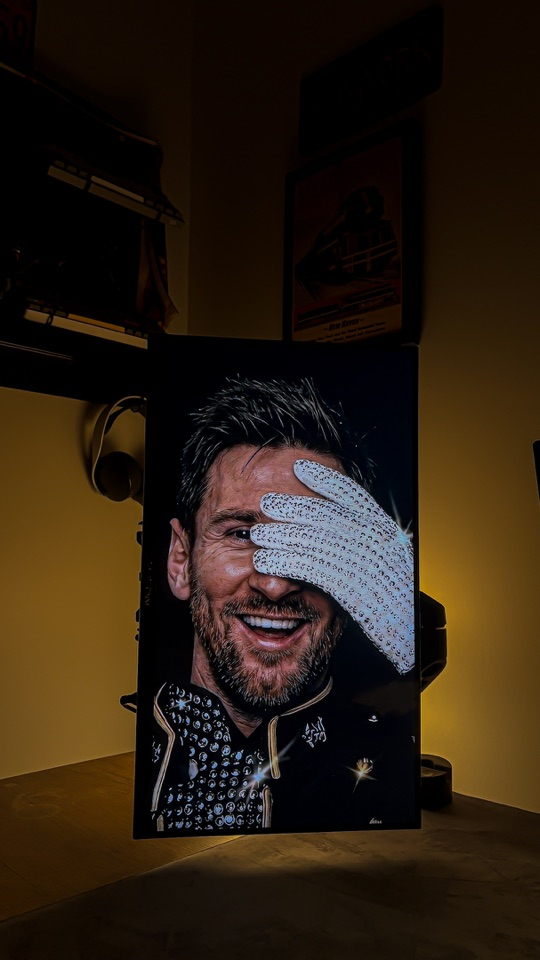
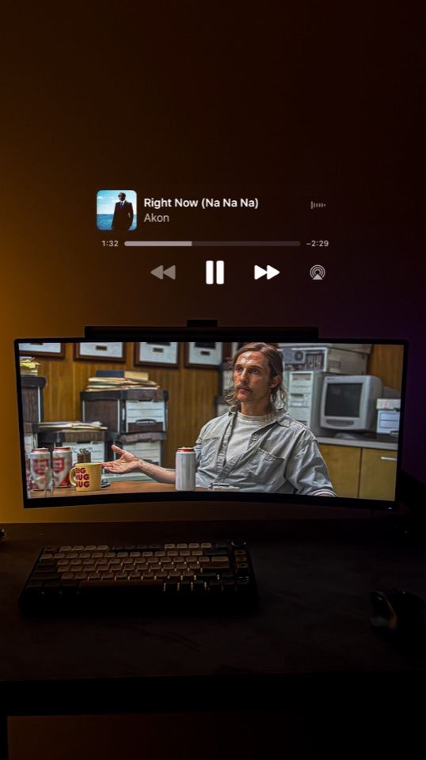
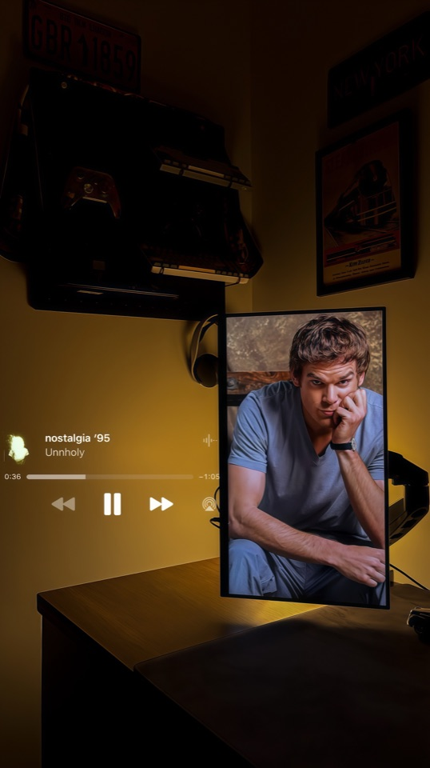
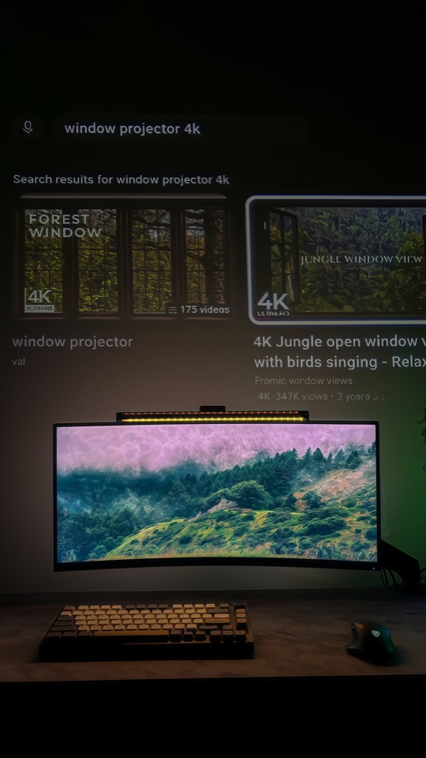

THE VISUAL JOURNAL
أعمالي.
صور ومقاطع، كل لقطة تحكي قصة.
صور
اضغط على الصورة لعرضها كاملة












مقاطع
قريبًاالمقاطع السينمائية تُضاف قريبًا.
THE VISUAL JOURNAL
صور ومقاطع، كل لقطة تحكي قصة.
اضغط على الصورة لعرضها كاملة






المقاطع السينمائية تُضاف قريبًا.